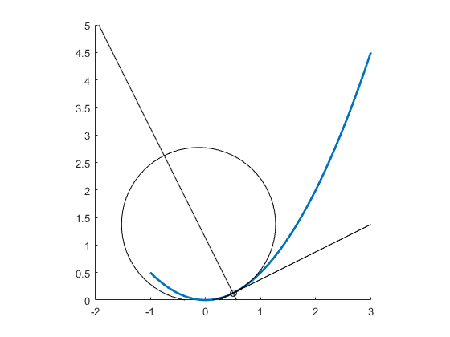

Contents
Parabola definition
c1 = [0 1];
c2 = [0 0 .5];
t = linspace(-1, 3, 100)';
curve = polynomialCurvePoint(t, c1, c2);
figure(1); clf;
hold on;
drawPolyline(curve, 'linewidth', 2);
axis equal;
axis([-2 3 0 5]);

Compute curvature for a specific position
pos = .5;
point = polynomialCurvePoint(pos, c1, c2);
deriv = polynomialCurveDerivative(pos, c1, c2);
kappa = polynomialCurveCurvature(pos, c1, c2);
radius = 1./kappa;
tangent = [point deriv];
normal = orthogonalLine(tangent, point);
center = pointOnLine(normal, radius);
circle = [center radius];
drawPoint(point, 'color', 'k');
drawLine(tangent, 'color', 'k');
drawLine(normal, 'color', 'k');
drawCircle(circle, 'color', 'k');
